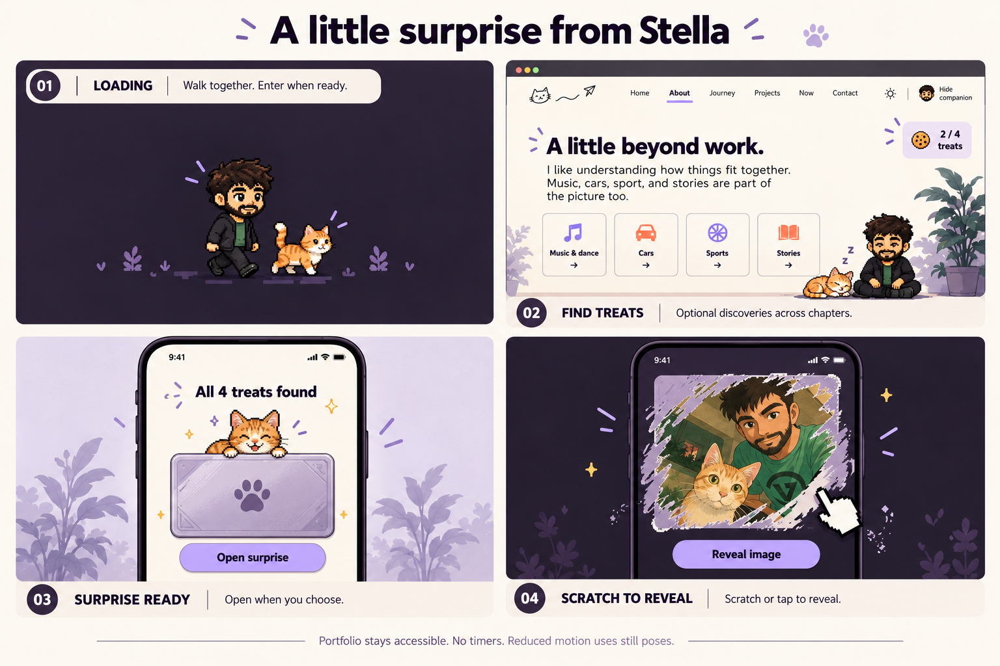
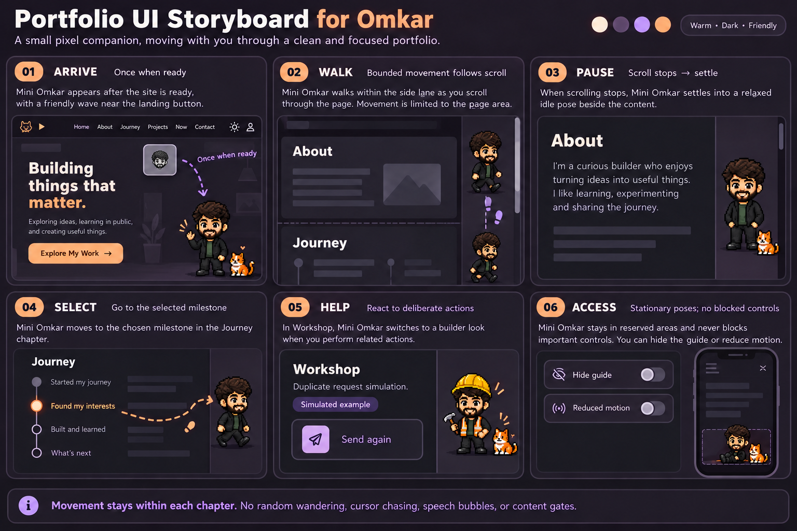
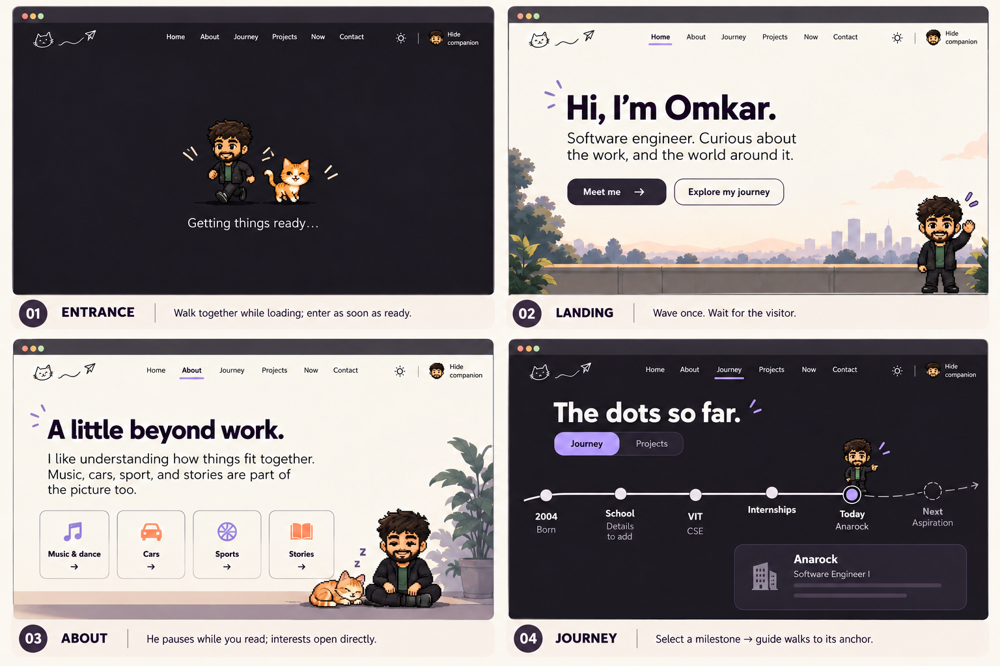
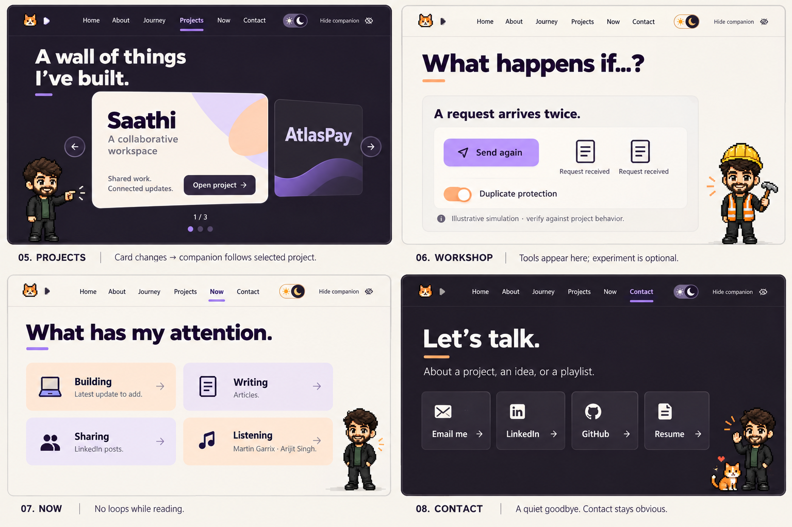
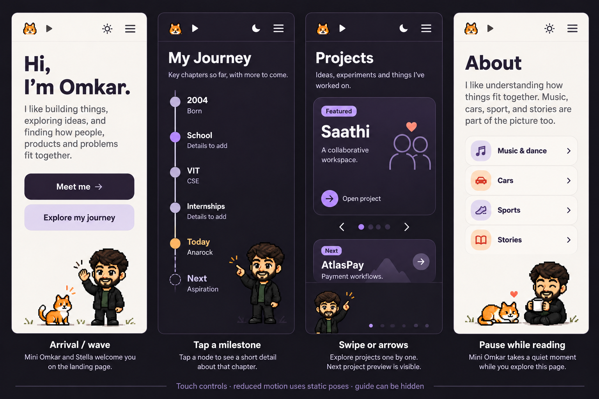

Walk in together. Discover a little surprise.
The loader is just mini Omkar and Stella walking or running. Find treats across the chapters to unlock an optional scratch card with your image together. Four treats is the proposed count; portfolio content stays open throughout.

Movement: how mini Omkar travels
A small companion reacts to scrolling, selection and experiments, then settles while you read.

Desktop: arrival, About and Journey
Continuous scroll: Home, About, Journey, Projects, Now and Contact. Mini Omkar and Stella walk during genuine loading; the original photo is the optional surprise.

Desktop: projects, Workshop, Now and Contact
The project wall stays central. The optional Workshop connects interaction to an engineering problem.

Mobile: a companion with room to move
Reserved positions keep the character clear of text and controls. No character controls are required for navigation.

Interaction rules
- Black jacket for everyday scenes; hard hat and tools only in the optional Workshop.
- Movement stays in safe margins and stops when the visitor stops.
- Milestone and project selection move him to a defined anchor.
- Mobile gets reserved space; Hide guide and reduced-motion support are required.
- Stella can join the entrance and contact. No random roaming or cursor chasing.
- Companion asset failure never blocks navigation or content.
Full component and interaction handoff · Your supplied character reference · Original surprise image


School history, dated current activity and exact project evidence remain content work. Generated artwork is a visual proposal; production needs a consistent sprite asset and verified project simulation.